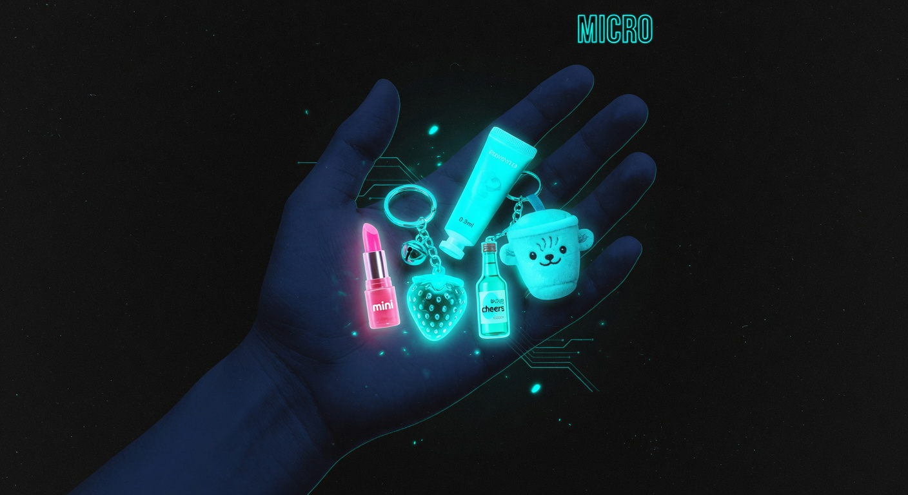
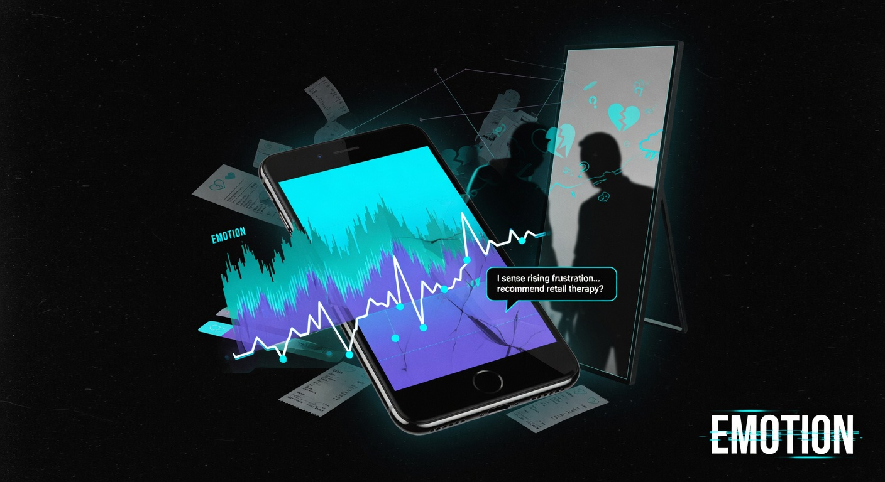
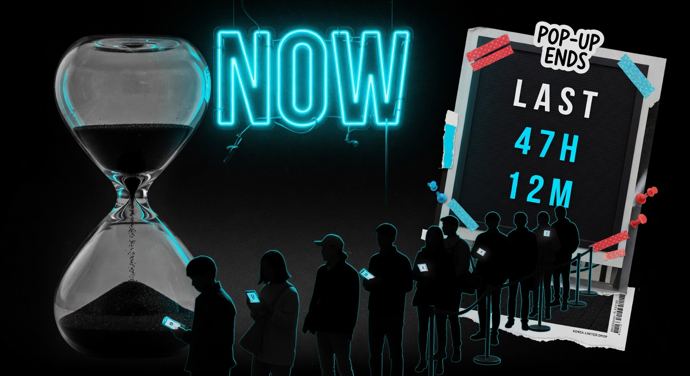
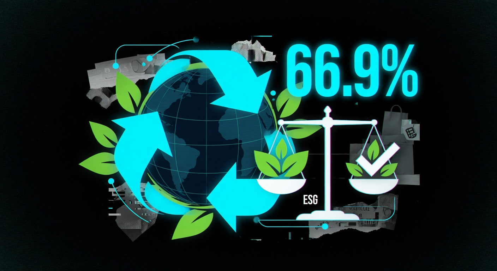
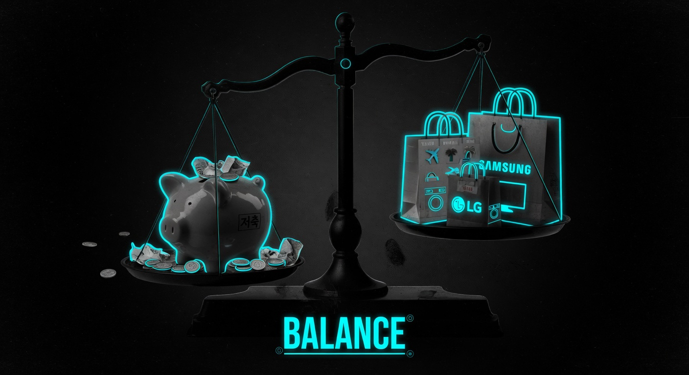
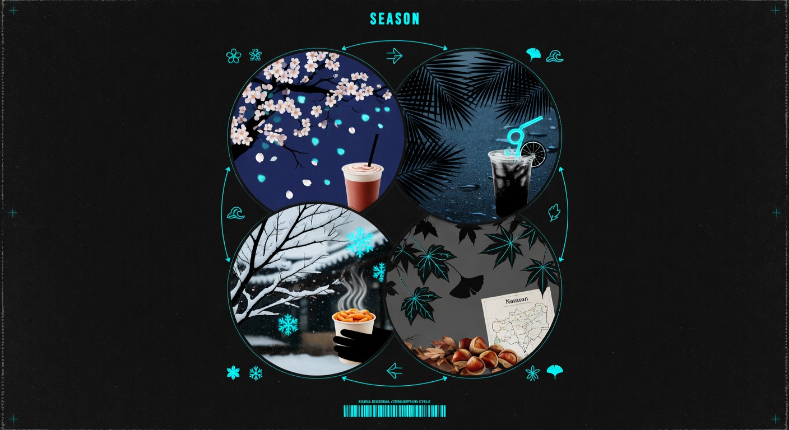

용돈 1만 원이 생겼다. 어떻게 쓰고 싶어?
① 좋아하는 작은 굿즈 하나 ② 친구랑 카페 한 번 ③ 저축 ④ 환경 친화적 제품 ⑤ 지금 딱 나온 시즌 한정판

(천재교육 사회② — 구정화 외, 3단원 경제생활과 선택)
마이크로 소비 — 작지만 특별한 만족

부담 없는 가격이지만 '나만의 특별함'을 느끼는 소형·저가 아이템에 집중하는 소비 방식. 미니 굿즈, 소용량 프리미엄 뷰티, 한정판 스티커팩이 대표 사례다.
메타센싱 — 내 감정을 읽는 소비

자신의 감정을 객관적으로 인지·관리하는 '메타센싱'을 소비 기준으로 삼는다. 지금 이 순간의 감정·경험을 충족시키는 콘텐츠나 제품을 선택하는 것이 특징.
적시소비 — '지금 아니면 놓친다'

미래 불확실성 속에서 '지금 이 순간'을 놓치지 않으려 한다. 팝업스토어·박람회·시즌 한정 경험을 적극 활용하며 시간의 희소가치를 중시한다.
가치소비(미닝아웃) — 기업 윤리까지 따진다

2025년 8월 대한상공회의소 조사(Z세대 350명)에서 66.9%가 "조금 비싸도 ESG 실천 기업 제품을 선택한다"고 답했다. 63.7%는 비윤리적 기업 불매 경험이 있다.
절약과 가치소비의 공존 — 똑똑한 균형

오픈서베이 2025 조사에 따르면 Z세대 10명 중 7명은 절약·저축에 관심을 가지면서도 가전·패션·여행 등 의미 있는 분야엔 과감히 지출한다. 구매 기준도 가격뿐 아니라 서비스 품질·판매자 신뢰로 이동했다.
제철·계절 경험 소비 — 시간을 소비한다

식재료를 넘어 패션·드라마·페스티벌 등 라이프스타일 전반에서 '제철 경험'을 추구한다. 계절감·시간의 흐름을 체감하는 소비가 늘고 있다.
🔍 나의 소비 유형 체크리스트
해당하는 것에 표시해봐. 몇 번이나 체크했어?
- 작고 귀엽거나 저렴하지만 '나만의 특별함'이 있는 물건을 산다 (→ 마이크로)
- 기분이 안 좋을 때 뭔가 사고 싶어지거나 유튜브·음악으로 감정을 해소한다 (→ 메타센싱)
- 팝업스토어·한정판이라는 말에 더 끌리는 편이다 (→ 적시)
- 갑질·환경오염 기업 제품은 쓰기 싫다고 느낀 적 있다 (→ ESG 가치소비)
- 평소엔 아끼면서 좋아하는 것엔 아낌없이 쓴다 (→ 균형)
- 시즌 한정 메뉴·계절 이벤트에 특별히 끌린다 (→ 제철)
체크한 수: ____ / 6 → 가장 많이 체크된 유형이 나의 소비 스타일이야!
(천재교육 사회② — 합리적 선택과 편익·기회비용 단원 연계)
📝 마무리 활동 — 나의 소비 스타일 한 문장으로 쓰기
체크리스트 결과와 6가지 트렌드를 참고해서, 나의 소비 스타일을 아래 형식으로 완성해봐.